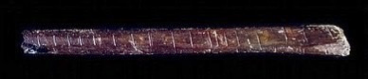
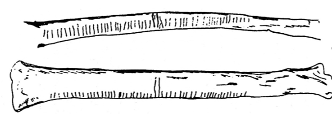
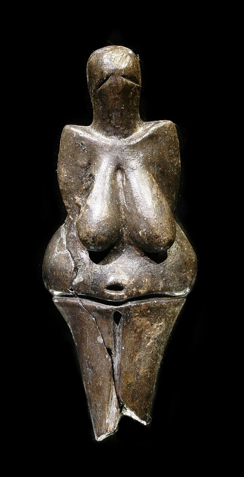
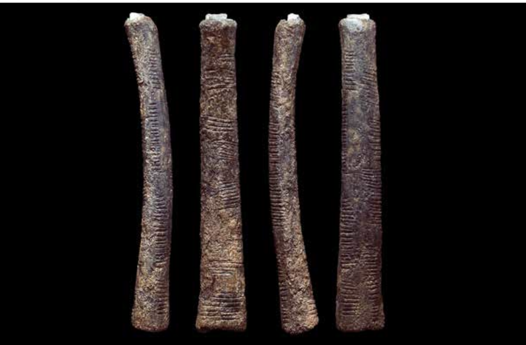
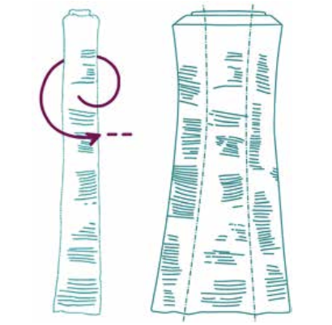
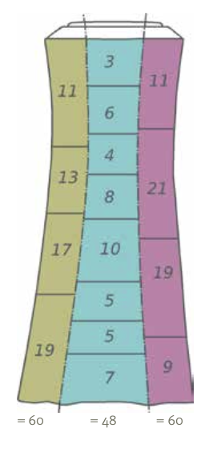

But on earth the numbers were created,
— Nikolay Gumilev
Like the cattle yoked and confined,
For the numbers always clearly stated
Every shade of meaning they defined.
Passus (Latin, plural Passūs) — a section, division, or canto of a story or poem, especially a medieval one.
When Did Humans Start Counting?
Who knows? It was certainly long before people started writing things down.
People living by hunting and gathering may have had many reasons to keep track of quantities: how many people had to be fed, how many animals had been hunted, or how much time had passed between events. We cannot know exactly what they counted or how they counted it. Counting itself leaves no archaeological trace.
At first, ideas of number, magnitude, and shape may have arisen from contrasts: one wolf and a whole pack, a pebble and a rock, the roundness of a lake and the straightness of a tree.
Gradually, another kind of realization must have occurred—what the mathematician and historian of mathematics Carl Boyer called sameness. Consider one wolf, one sheep, and one tree. They are completely different objects, but they have something in common: each is one.
The moment we separate one from the particular object and begin thinking about oneness itself, we have made an extraordinary abstraction.
Was this the moment mathematics was born?
From Objects to Marks
Our bodies provide a natural counting device. Many known counting systems use fingers, hands, toes, or other parts of the body. In a number of languages, words for five are historically connected with the word for hand.
But there is another important step in abstraction.
Suppose a hunter wants to keep track of the wolves seen near a settlement. Instead of remembering the wolves themselves, one mark can be made for every wolf:
| | | | |
The marks do not look like wolves. Yet each mark can stand for one wolf.
And the same five marks could stand for five sheep, five people, five days, or five anything.
This is tallying: using one object or mark to correspond to another. It allows a quantity to be recorded without having a written numeral for it.
We do not know when people first began tallying. But unlike counting in one's head or on one's fingers, marks made on durable objects can survive.
And some very old marked objects have survived.
The Lebombo Bone
One of them was found at Border Cave in the Lebombo Mountains of southern Africa. It is a fragment of a baboon fibula, bearing 29 deliberate incisions. The archaeological context at Border Cave has been dated to approximately 44,000 years ago (d’Errico et al. 2012).

The bone is broken at one end, so 29 may not even have been the original number of marks.
What were the marks for?
Were they a tally? Did they record objects, events, or days? Were they decorative or symbolic? Was the bone used to keep track of menstrual cycles? Could the 29 marks have been connected with a lunar cycle?
We do not know. The broken end immediately undermines the seductive “29 days” argument.
What we do know is more modest—and perhaps more interesting: tens of thousands of years ago, someone deliberately made a sequence of marks on a bone.
The Wolf Bone of Dolní Věstonice
Another marked bone was found at Dolní Věstonice, an Upper Paleolithic site in what is now the Czech Republic.

Look at the bone before reading further. What do you notice?
What, if anything, do the numbers 30 and 25 suggest to you?
Archaeologist Karel Absolon interpreted the groups as
30 = 6 × 5, 25 = 5 × 5
and regarded the arrangement as evidence of mathematical thinking.
It is an attractive interpretation. But there is an important question:
Does finding a mathematical pattern in an artifact prove that its maker intended that pattern?
The marks might represent counting or grouping. They might have had a calendrical, symbolic, decorative, or other purpose. Without written evidence, we cannot ask their maker.
Dolní Věstonice has also yielded an extraordinary variety of art and symbolic objects, including representations of humans and animals and the famous ceramic Venus of Dolní Věstonice. The people who made these objects were capable of sophisticated representation and abstraction.

The Ishango Bone
Now consider a still more intriguing object.
In 1950, Belgian geologist Jean de Heinzelin de Braucourt discovered a small bone artifact at Ishango, near Lake Edward in what is now the Democratic Republic of the Congo. The artifact is roughly 20,000 years old. It bears 168 incisions arranged in three columns.



Unlike a simple row of tally marks, their arrangement invites us to look for relationships among the groups.
One column is commonly read as four groups:
11, 13, 17, 19
What do you notice?
They are precisely the prime numbers between 10 and 20.
They also add to 60.
Another column is commonly read as
11, 21, 19, 9
which suggests
10 + 1, 20 + 1, 20 − 1, 10 − 1.
Elsewhere on the bone, pairs of groups have been interpreted as relationships such as 3 and 6, 4 and 8, and 5 and 10—suggesting doubling.
It is difficult for a mathematically trained eye not to see patterns.
But that creates a problem.
Are we discovering the mathematics of the person who made the bone—or mathematics that we can impose upon the bone?
Numerous interpretations of the Ishango marks have been proposed: arithmetic operations, numerical bases, doubling, prime numbers, and lunar calculations.
Historian of mathematics Olivier Keller has argued that many of these interpretations go considerably beyond what the artifact itself can establish. The fact that we recognize a mathematical pattern does not demonstrate that the maker of the artifact recognized—or intended—the same pattern.
Other researchers, including Vladimir Pletser and Dirk Huylebrouck, have defended much more elaborate mathematical interpretations of the Ishango markings.
The disagreement is important.
It reminds us to distinguish between three things:
what we can observe, what we can infer, and what we can prove.
We have come a long way from our first wolf:
one wolf → one mark → groups of marks → patterns among groups
At every step the possibility of mathematical abstraction becomes more tempting.
And at every step another question becomes more important:
How Do We Know?
When written records do not exist, what evidence would convince you that an artifact records mathematical thought?
References
- Boyer, Carl B. A History of Mathematics. New York: John Wiley & Sons, 1968.
- d’Errico, Francesco, Lucinda Backwell, Paola Villa, Ilaria Degano, Jeannette J. Lucejko, Marion K. Bamford, Thomas F. G. Higham, Maria Perla Colombini, and Peter B. Beaumont. “Early Evidence of San Material Culture Represented by Organic Artifacts from Border Cave, South Africa.” Proceedings of the National Academy of Sciences 109, no. 33 (2012): 13214–13219. DOI.
- Folta, Jaroslav. “Věstonická vrubovka.” Vesmír 76 (1997): 337. Article.
- Royal Belgian Institute of Natural Sciences. “The Ishango Bone.” Collections and research materials on the Ishango artifacts. Ishango collection page.
- Keller, Olivier. “The Fables of Ishango, or the Irresistible Temptation of Mathematical Fiction.” BibNum. English PDF.
- Pletser, Vladimir, and Dirk Huylebrouck. “An Interpretation of the Ishango Rods.” The Mathematical Intelligencer 21, no. 1 (1999): 30–35.
- Kapcar, Andrej. “Tally Sticks of the Stone Age.” 2011. ResearchGate.